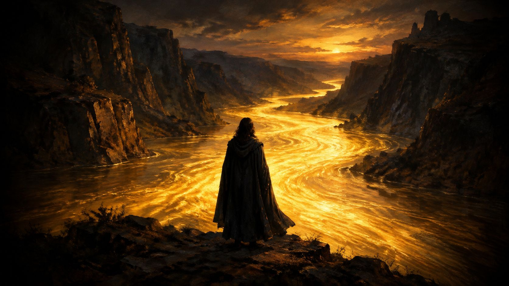
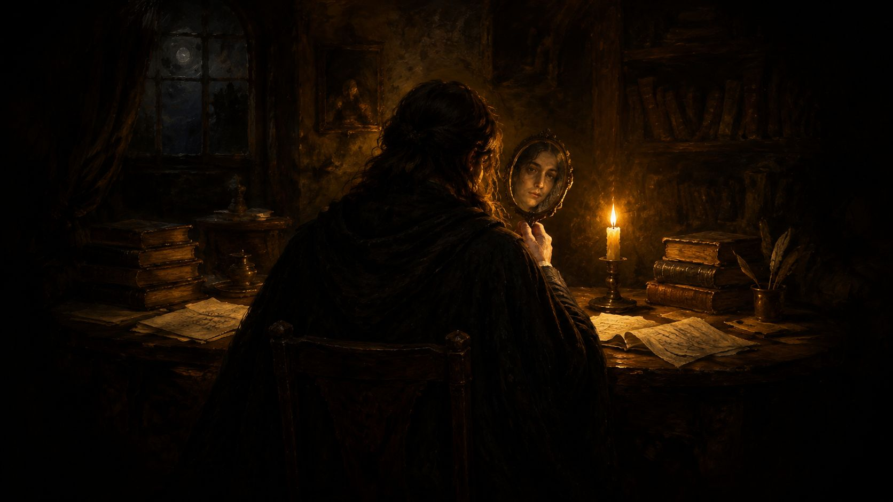
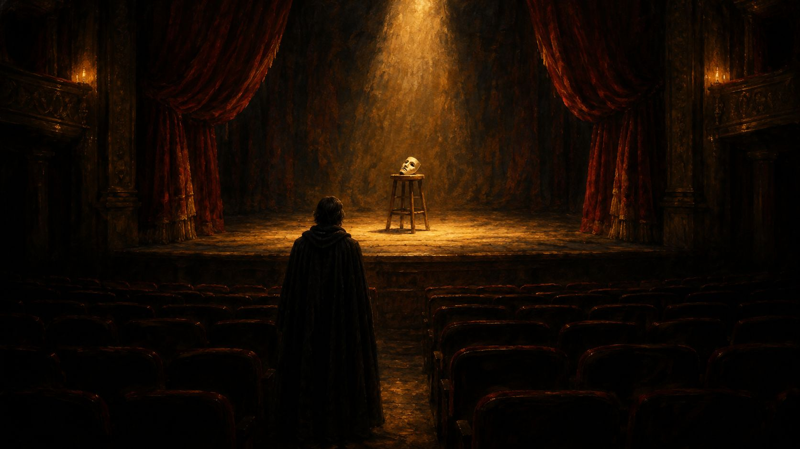
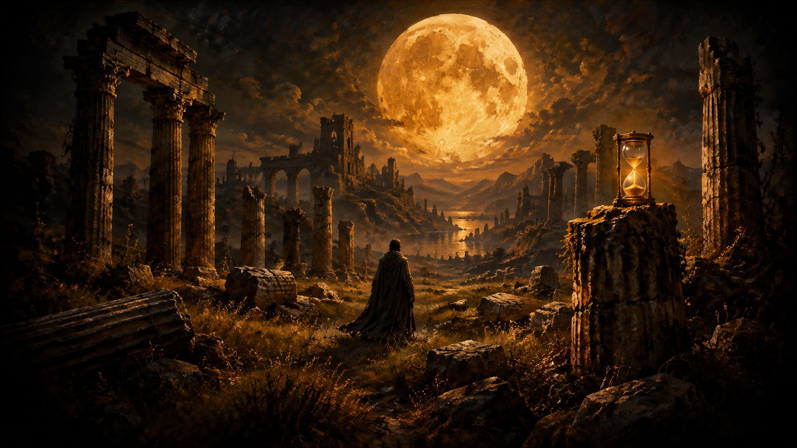
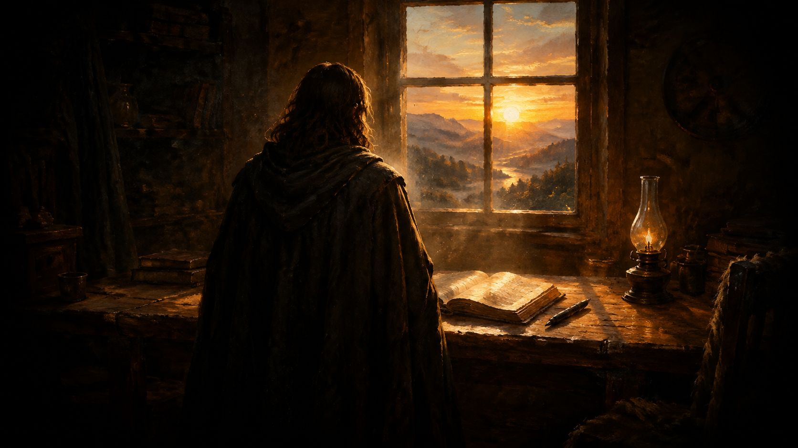
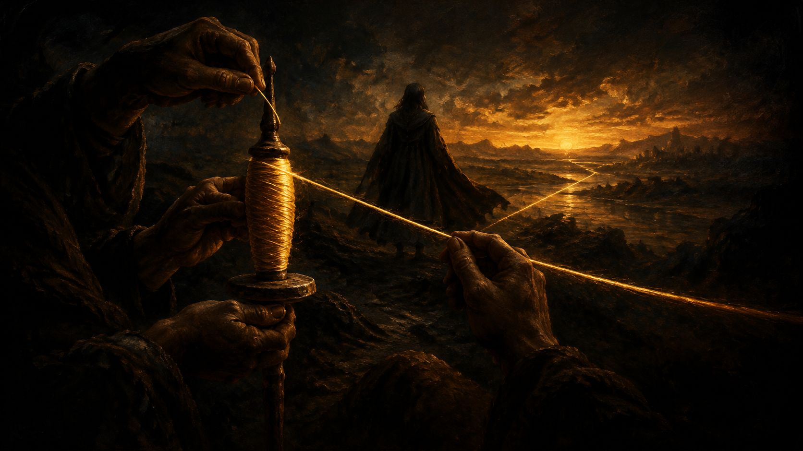
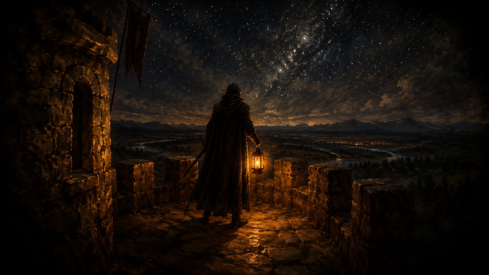

Sharpe Lab
Every strategy I study, tested out of sample and tracked live.
Nothing, Lucilius, is ours, except time.
Seneca, Letters to Lucilius 1.3, tr. Richard M. Gummere

Time is a river, a violent torrent of things coming into being. Each one, as soon as it has appeared, is swept away: it is succeeded by another which is swept away in its turn.
Marcus Aurelius, Meditations 4.43, Foulis translation (1742)
There are more things, Lucilius, likely to frighten us than there are to crush us; we suffer more often in imagination than in reality.
Seneca, Letters to Lucilius 13.4, tr. Richard M. Gummere
Be like a promontory against which the waves are always breaking. It stands fast, and stills the waters that rage around it.
Marcus Aurelius, Meditations 4.49, Foulis translation (1742)

Above all, don’t lie to yourself. The man who lies to himself and listens to his own lie comes to such a pass that he cannot distinguish the truth within him, or around him, and so loses all respect for himself and for others.
Fyodor Dostoevsky, The Brothers Karamazov, Book II, tr. Constance Garnett

First of all, tragedy was introduced to remind us that certain events happen, and are fated to happen as they do; and to teach us that what entertains us on the stage should not grieve us on the greater stage of the world.
Marcus Aurelius, Meditations 11.6, Foulis translation (1742)

All things are for a day, both what remembers and what is remembered.
Marcus Aurelius, Meditations 4.35, Foulis translation (1742)
Aye, the willing soul Fate leads, but the unwilling drags along.
Seneca, Letters to Lucilius 107.11 (a verse he cites), tr. Gummere
Pain and suffering are always inevitable for a large intelligence and a deep heart.
Fyodor Dostoevsky, Crime and Punishment, Part III, tr. Constance Garnett
Receive the gifts of fortune without pride; and part with them without reluctance.
Marcus Aurelius, Meditations 8.33, Foulis translation (1742)

Lay hold of to-day’s task, and you will not need to depend so much upon to-morrow’s.
Seneca, Letters to Lucilius 1.2, tr. Richard M. Gummere
And then recollect that it is neither the past nor the future that can oppress you, but always the present only.
Marcus Aurelius, Meditations 8.36, Foulis translation (1742)

Willingly resign yourself to Clotho, permitting her to spin her thread of what yarn she may.
Marcus Aurelius, Meditations 4.34, Foulis translation (1742)

Let us live thus, and speak thus; let Fate find us ready and alert.
Seneca, Letters to Lucilius 107.12, tr. Gummere
Observe continually that all things exist in change; and keep this thought ever with you, that Nature loves nothing more than changing what things now are, and making others like them.
Marcus Aurelius, Meditations 4.36, Foulis translation (1742)